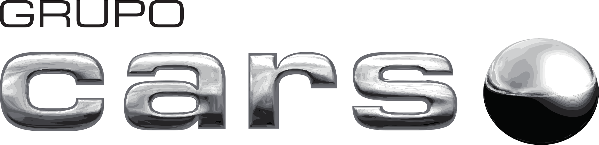
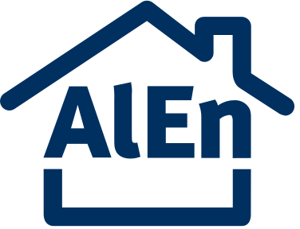

01 /
Smart manufacturing, automation & materials
Convergence of advanced manufacturing processes, robotics and materials innovation — from design to system-level performance.
AIMS is the multidisciplinary institute of Tec de Monterrey dedicated to transforming manufacturing and supply chain systems through artificial intelligence, advanced analytics, automation, and materials innovation — generating measurable impact for industry and society.
We seek to transform manufacturing and supply chain systems through artificial intelligence, advanced analytics, automation and materials innovation — generating measurable impact for industry and society.
Research at AIMS is organized around four areas that deliberately intersect. Integration, not isolated discipline, is our differentiator.
View all research areas →Convergence of advanced manufacturing processes, robotics and materials innovation — from design to system-level performance.
AI that doesn't operate in isolation: integrated with sensors, computing and physical control layers, robotics and energy. Adaptive, autonomous, data-driven systems.
End-to-end supply chain design and transformation. Resilience, efficiency, sustainability and special attention to Scope 3 and regulatory pressures.
AI applied to micro and small enterprises in low-data environments. An initiative born at MIT CTL, actively expanding at Tec de Monterrey.
LIFT Lab applies artificial intelligence and state-of-the-art research to the challenges of micro and small enterprises. It combines technological innovation with large-scale field deployment — measurable productivity, inclusion and resilience.
Explore the LIFT Lab →A multi-level ecosystem for building long-term, high-impact industry-university partnerships based on knowledge exchange and co-creation.
Looking for a custom sponsored research program? Let's talk.
Explore the full model →Applied thinking, deployment case studies and research articles from AIMS researchers.
View all publications →Tecnológico de Monterrey unveils AIMS — four integrated research areas combining artificial intelligence, advanced manufacturing, and supply chain systems to drive measurable industrial impact across Mexico and Latin America.
Read the full article →We work with industrial and academic leaders in Mexico, Latin America and the United States.


Over 40 principal researchers, postdoctoral fellows and staff scientists across four campuses, organized around AIMS research areas.
Meet the faculty →